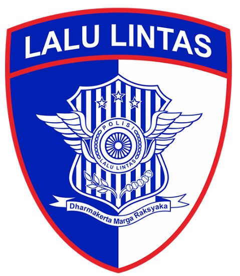
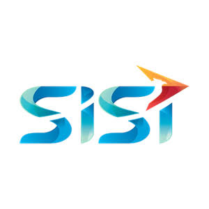
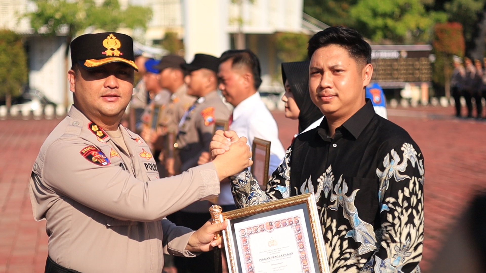

Building Software.
Analyzing Data.
Solving Real Problems.
Hi, I'm Farhan Rizqullah Bagaskara, an Informatics Engineering graduate focused on software engineering, data analytics, and AI-driven solutions.
About Me
I am a fresh graduate in Informatics Engineering from Universitas Muhammadiyah Gresik with a concentration in Software Engineering.
I have experience building end-to-end web applications, designing relational database schemas, and training Deep Learning models for data-driven research. I enjoy the process of turning complex problems into scalable software solutions.
Outside of writing code, I have served as the President of the Informatics Student Association. This experience shaped my ability to manage teams, coordinate projects, and communicate effectively across different roles.
Work Experience

Staff Unit Kamsel
Managed Android Enterprise MDM for centralized device provisioning, application management, security policies, user access, and device compliance across 16 Polsek. Supported digital communication and social media operations through content planning, copywriting, visual production, and daily performance reporting.

Commercial Account Intern
Supported commercial and digital marketing activities through social media management, web content creation, and promotional materials. Gained practical exposure to business processes, customer communication, and enterprise technology solutions, including basic SAP ERP concepts.
Unit Of ICT Services Intern
Provided IT support for end users, including hardware and software troubleshooting, printer support, and basic network monitoring. Assisted the ICT Services team in maintaining IT operations and resolving day-to-day technical issues across the Main Office.
Technical Skills
Featured Projects
Pusaka - Pusat Alat Tulis Kantor HIMATIF
Website ini merupakan media informasi badan usaha HIMATIF yang menyediakan layanan alat tulis kantor (ATK), printing, fotokopi, percetakan, dan kebutuhan administrasi lainnya. Website ini hadir untuk memudahkan mahasiswa dan masyarakat memperoleh layanan secara cepat, praktis, dan efisien.
PHP Native • MySQL • Javascript • HTML/CSSCNN Xception for AI Generated Image Detection
Project ini merupakan implementasi Deep Learning berbasis Convolutional Neural Network (CNN) untuk mendeteksi apakah sebuah gambar merupakan gambar asli atau gambar yang dihasilkan oleh Artificial Intelligence.
Laravel • PHP • Python • CNN (Xception) • Numpy • Scikit-learn Pandas •Sistem Forecasting Penjualan Kopi - Kedai Kopi
Aplikasi web untuk memprediksi penjualan menggunakan metode Weighted Moving Average (WMA). Project ini dibangun dengan Laravel dan dilengkapi fitur pengelolaan data penjualan, perhitungan prediksi, evaluasi akurasi menggunakan MAPE (Mean Absolute Percentage Error), serta export hasil ke Excel.
Laravel • MySQL • PHP
Prediksi Kerusakan Laptop - Naive Bayes
Aplikasi web untuk melakukan prediksi kerusakan laptop menggunakan algoritma Naive Bayes berdasarkan data gejala atau kondisi perangkat. Aplikasi ini dibangun menggunakan Laravel sebagai framework pengembangan web dan MySQL sebagai database. Sistem menyediakan pengelolaan data latih, data uji, proses perhitungan Naive Bayes, hasil prediksi, serta detail perhitungan probabilitas yang digunakan dalam menentukan jenis kerusakan laptop.
Laravel • JavaScript • MySQLMobile Device Management System
Conversion-focused landing page and main content interface with multi-level navigation and structured data display.
AirdroidResearch & Publications

Perancangan Sistem Integrasi Data Pelanggaran Lalu Lintas Berbasis Web Dengan Metode Waterfall Di Pos Satlantas Pada Kawasan Tertib Lalu Lintas Polres Gresik
JATI (Jurnal Mahasiswa Teknik Informatika).
Education & Organization

Bachelor of Informatics Engineering
Concentration: Software Engineering
GPA: 3.66 / 4.00
Mata Kuliah Relevan : Rekayasa Perangkat Lunak, Analisis dan Perancangan Sistem, Rekayasa Kebutuhan, Pemrograman Web, Pemrograman Berorientasi Objek, Pemrograman Terstruktur, Basis Data, Basis Data Lanjut, Manajemen Kualitas Perangkat Lunak.

Multimedia (Information & Communication Technology)
Built a foundation in digital technology, multimedia, and creative problem-solving, which sparked an interest in software engineering and interface design.
Ketua Umum Himpunan Mahasiswa Teknik Informatika UMG
Led the Informatics Student Association (HIMATIF) in planning, coordinating, and evaluating organizational initiatives aimed at supporting student development in both academic and non-academic areas. Responsible for managing organizational operations, aligning team objectives, and fostering collaboration across divisions to ensure the effective execution of programs and activities. During my tenure, I oversaw the implementation of 35 organizational programs, initiated the East Java Information Technology Week focused on Artificial Intelligence (AI), and led community engagement initiatives to promote digital literacy and technology awareness among high school students. These experiences strengthened my leadership, strategic planning, project management, communication, analytical thinking, and problem-solving capabilities.
Honors & Awards
Recognition received throughout academic and professional journey.

Let's Build Something Useful.
Whether you're looking for a developer, discussing a project, or simply want to connect, feel free to reach out.
- EMAIL farhanbagask@gmail.com
- LINKEDIN farhan-rizqullah-bagaskara
- GITHUB github.com/farhanrbagask